Las frecuencias alélicas guardan la memoria de lo que le pasó a una población: si se redujo hace poco, cuántas plantas contribuyen de verdad a la siguiente generación, qué tan lejos viajan el polen y la semilla, cuánto se autofecunda y si sus caracteres se diferenciaron más de lo que permite la deriva. El Bloque 9 reúne cinco análisis que aparecen según los datos que cargues.
No todos los análisis sirven para todos los datos. Los cuellos de botella y el tamaño efectivo necesitan genotipos codominantes de plantas diploides; la estructura espacial, una coordenada para cada planta; PST, caracteres medidos. La tarjeta 1 · Settings dice cuáles aplican a tus datos y el bloque corre solo al abrirlo.
| Análisis | Datos que necesita | Ejemplo del capítulo |
|---|---|---|
| Cuellos de botella | Codominantes diploides, poblaciones declaradas con 10 plantas o más. | Tres poblaciones simuladas |
| Tamaño efectivo (Ne) | Los mismos. | Tres poblaciones simuladas |
| Estructura espacial | Al menos 10 plantas con su propia latitud y longitud; cualquier marcador. | Rodal simulado · agave |
| Sistema de apareamiento | Codominantes diploides con poblaciones declaradas. | Tres poblaciones simuladas |
| PST frente a FST | Caracteres cuantitativos en dos o más poblaciones. | Morfología del maíz |
Cuando una población se reduce, pierde primero sus alelos raros: un alelo presente en unas pocas plantas desaparece con facilidad si esas plantas no dejan descendencia. La heterocigosis esperada, en cambio, casi no cambia, porque depende sobre todo de los alelos frecuentes. Durante un tiempo la población queda con más heterocigosis de la que corresponde a su número de alelos. Cornuet y Luikart (1996) llamaron a esto exceso de heterocigosis y lo convirtieron en una prueba.
El exceso de heterocigosis de esta prueba compara la He calculada con las frecuencias alélicas contra la que se espera para el número de alelos observado. No tiene que ver con el exceso de heterocigotos (Ho > He) del Bloque 4, que compara genotipos observados contra Hardy–Weinberg.
Para saber cuánta He “corresponde” a un número de alelos, hay que suponer cómo mutan. La app ofrece los tres modelos clásicos (tabla 10.2) y simula, locus por locus, muestras de una población estable con ese modelo.
| Modelo | Cómo cambia un alelo | Cuándo usarlo |
|---|---|---|
| IAM · alelos infinitos | Cada mutación crea un alelo que no existía. | Aloenzimas y marcadores sin orden de tamaños. Con microsatélites encuentra cuellos de botella con demasiada facilidad. |
| SMM · paso a paso | Cada mutación suma o resta una repetición. | Microsatélites muy regulares. Es el más conservador: le cuesta detectar reducciones. |
| TPM · dos fases Di Rienzo y colaboradores (1994) | La mayoría de las mutaciones son de un paso (95 % por omisión) y el resto de varios pasos, con varianza 12. | Microsatélites en general; es el recomendado (Piry, Luikart y Cornuet, 1999). La app lo usa junto con el SMM. |
Para cada locus con n plantas y k alelos, la app simula genealogías coalescentes de 2n copias con el modelo de mutación elegido. Ajusta θ = 4Neμ hasta que las muestras tengan en promedio unos k alelos y conserva solo las que tienen exactamente k (300 por omisión). La media de su He es Heq, y la fracción de simulaciones con He igual o mayor que la observada es la probabilidad de exceso de ese locus.
Si las plantas se autofecundan, sus dos copias de un locus a menudo descienden de una sola copia ancestral: n plantas con endogamia F llevan en promedio n(2 − F) copias independientes, no 2n. Con menos copias independientes se ven menos alelos, y la población parecería tener exceso sin haberse reducido. Por eso la app estima FIS en cada población y, si es positivo, simula el equilibrio con n(2 − F) copias.
Cada locus da una comparación ruidosa; la conclusión sale de juntar los loci. La app aplica tres pruebas estadísticas y dos indicadores de forma (tabla 10.3).
| Prueba | Qué hace | Cómo se lee |
|---|---|---|
| Signos Cornuet y Luikart (1996) | Cuenta los loci con He > Heq y los compara con los esperados en equilibrio, que son un poco más de la mitad porque la distribución de He es asimétrica. | P < 0.05: sobran loci con exceso. Poca potencia. |
| Diferencias estandarizadas (T2) | Suma (He − Heq)/DE de todos los loci y la divide entre √L. | P < 0.05: exceso promedio. Pide 20 loci o más. |
| Wilcoxon de rangos con signo Luikart y colaboradores (1998) | Ordena los loci por la posición de su He dentro de su propia distribución de equilibrio y prueba si predominan las posiciones altas. | La más potente con pocos loci (desde 4). Es la que usan la interpretación y las cifras. |
| Cambio de moda Luikart y colaboradores (1998) | Reparte los alelos de todos los loci en clases de frecuencia (0–0.1, 0.1–0.2…). | En forma de L: estable. Si la clase 0–0.1 ya no es la mayor, la distribución se desplazó. Cualitativo; pide muestras grandes. |
| Razón M Garza y Williamson (2001) | M = k / (rango de tamaños en repeticiones + 1): tras una reducción quedan huecos en la escalera de tamaños. | M < 0.68 sugiere una reducción más antigua o prolongada que la que ve el exceso. Necesita tamaños en pb y el motivo. |
La prueba de Wilcoxon supone que, sin cuello de botella, las diferencias He − Heq se reparten simétricamente alrededor de cero. No es así: dado k, la He suele quedar un poco arriba de su media y a veces muy abajo. Con 200 poblaciones estables de 40 plantas y 20 microsatélites, simuladas para este manual, Wilcoxon sobre las diferencias crudas “encontró” un cuello de botella en 47 (23.5 %), en lugar del 5 % esperado. Aplicada a la posición de cada locus dentro de su distribución de equilibrio, convertida a puntuación normal, rechazó 17 (8.5 %); la prueba de signos, 10 (5 %). Por eso la app usa la segunda forma. Ese 8.5 % todavía es algo mayor que el nominal, porque θ se estima de los mismos datos: es una razón más para exigir que TPM y SMM coincidan.
| Si… | entonces… |
|---|---|
| Wilcoxon da P < 0.05 para exceso con TPM y con SMM | Hay señal de una reducción reciente. Confírmala con otra muestra o con el historial de la población. |
| Solo el IAM da exceso | Con microsatélites no basta: el IAM exagera el exceso. |
| El exceso viene de uno o dos loci | Revisa esos loci: un alelo nulo o la selección afectan a un locus, la demografía a todos. |
| Hay déficit significativo | La población pudo crecer o recibir inmigrantes con alelos raros. |
| M < 0.68 sin exceso | Una reducción más antigua o larga es compatible; el exceso ya se borró. |
| Hay menos de 10 loci polimórficos o menos de 20 plantas | La prueba tiene poca potencia: “sin señal” no demuestra estabilidad (Luikart y Cornuet, 1998). |
La señal es pasajera: cuando la población alcanza un nuevo equilibrio entre mutación y deriva, el exceso desaparece aunque siga siendo pequeña.
El tamaño efectivo, Ne, es el número de plantas de una población ideal que perdería diversidad por deriva al mismo ritmo que la real. Casi siempre es menor que el censo: no todas las plantas se reproducen, unas dejan mucha más descendencia que otras y el tamaño cambia de un año a otro. En promedio, Ne ronda la décima parte del número de adultos (Frankham, 1995). Es la cifra que importa para la conservación, porque fija la velocidad a la que se pierde la diversidad y aumenta la endogamia.
La app lo estima con el método del desequilibrio de ligamiento (Hill, 1981; Waples, 2006). En una población pequeña, la deriva crea asociaciones al azar entre alelos de loci no ligados. La asociación se mide con r², que tiene dos fuentes: el muestreo de S plantas (cerca de 1/S) y la deriva (cerca de 1/(3Ne)). La app resta lo que se espera del muestreo y convierte el resto en Ne con las correcciones de Waples (2006). Estima el Ne de la generación de los padres de las plantas muestreadas.
En la población Cuello_botella se analizaron S = 40 plantas. El muestreo aporta E(r²) = 1/S + 3.19/S² = 0.025 + 0.00199 = 0.02699 (Waples, 2006, para S ≥ 30). El r² observado es 0.03171, así que a la deriva le corresponde r²′ = 0.03171 − 0.02699 = 0.00472. Entonces Ne = [1/3 + √(1/9 − 2.76 r²′)] / (2 r²′) = (0.3333 + 0.3132) / 0.00944 = 68.5. La población se simuló con 40 plantas: en 150 simulaciones iguales la mediana de la estimación fue 42, y esta muestra quedó por arriba del percentil 90.
| Estimador | En qué se basa | Cuándo sirve |
|---|---|---|
| Desequilibrio de ligamiento Waples (2006); Waples y Do (2008) | r² medio entre pares de loci menos lo esperado por el muestreo. Excluye alelos con frecuencia menor que Pcrit (0.02) porque inflan r². Intervalo por jackknife sobre loci. | El más preciso de una sola muestra. Funciona bien con Ne pequeño o mediano; con Ne grande el límite superior es ∞. |
| Exceso de heterocigotos Pudovkin y colaboradores (1996) | Con pocos padres, las frecuencias de machos y hembras difieren por azar y los hijos tienen más heterocigotos: D = (Ho − He)/He y Ne = 1/(2D) + 1/(2(D + 1)). | Solo con Ne muy pequeño (decenas). Con D cerca de 0 su límite superior es ∞. |
| Cifras de referencia · Ne ≥ 50 evita la depresión por endogamia a corto plazo y Ne ≥ 500 conserva el potencial evolutivo (Franklin, 1980); Frankham y colaboradores (2014) proponen elevarlas a 100 y 1000. | ||
| Si… | entonces… |
|---|---|
| La estimación o su límite superior es ∞ | El r² no se distingue del ruido del muestreo: Ne es grande en relación con la muestra, no desconocido. Reporta el límite inferior. |
| Los límites quedan bajo 50 o bajo 100 | La población pierde diversidad rápido; es una alerta de conservación. |
| La población se autofecunda o tiene FIS alto | La endogamia correlacionada entre loci infla r² y baja Ne; interprétalo como un mínimo. |
| La muestra mezcla subpoblaciones o inmigrantes | La mezcla también crea desequilibrio: revisa la estructura (Bloque 7) antes de reportar. |
| Hay menos de 25 plantas o pocos loci | El intervalo será muy amplio; más loci ayudan tanto como más plantas. |
El método supone apareamiento al azar, loci no ligados y una población cerrada, y estima Ne por generación.
Dentro de una población continua, si la semilla cae cerca de la madre y el polen viaja poco, las plantas vecinas son parientes: hermanas, medias hermanas o primas. El parentesco disminuye con la distancia y forma manchas de familias. Medir cómo cae el parentesco con la distancia dice qué tan lejos se mueven los genes en cada generación, sin seguir una sola semilla (Vekemans y Hardy, 2004).
| Estadístico | Definición | Qué dice |
|---|---|---|
| Fij · parentesco Loiselle y colaboradores (1995) | Σa (pia − pa)(pja − pa) / Σa pa(1 − pa) + 1/(2n − 1) | Para codominantes. 0 entre plantas tomadas al azar; 0.25 entre hermanas completas y 0.125 entre medias hermanas. |
| r · autocorrelación Smouse y Peakall (1999) | Se calcula desde una distancia genética al cuadrado entre plantas, centrada. | Para cualquier marcador. Sin estructura su valor esperado es −1/(n − 1), no 0: la banda de permutaciones lo toma en cuenta. |
| F1 | Parentesco medio en la primera clase de distancia. | Qué tan emparentados están los vecinos. |
| bF | Pendiente de Fij sobre ln(distancia), con todos los pares. | Qué tan rápido cae el parentesco. |
| Sp Vekemans y Hardy (2004) | Sp = −bF / (1 − F1) | La intensidad de la estructura, comparable entre estudios. |
| Nb · vecindario | Nb ≈ 1/Sp = 4πDσ² | Con la densidad D de plantas, da la varianza de dispersión de genes σ² por generación. |
La app agrupa los pares de plantas en clases de distancia con el mismo número de pares, calcula el parentesco medio (o r) de cada clase y construye una banda del 95 % permutando las plantas entre las ubicaciones 999 veces. Una clase por arriba de la banda indica que esas plantas están más emparentadas de lo que el azar explica.
Si cargas varias poblaciones separadas por kilómetros, los pares de plantas de poblaciones distintas quedan en las clases lejanas y arrastran la diferenciación entre poblaciones al correlograma, que ya mide el Bloque 5. Por eso pairs usa por omisión within populations (fine scale): solo pares de la misma población, con el parentesco referido a las frecuencias de cada una y permutaciones dentro de cada población, y combina todas en un solo correlograma. all pairs mezcla ambas escalas. Si todas las plantas de una población comparten la coordenada del sitio, no hay estructura fina que medir: usa el aislamiento por distancia del Bloque 6.
En el rodal simulado, bF = −0.0207 y F1 = 0.0292, así que Sp = 0.0207 / (1 − 0.0292) = 0.0213 y Nb ≈ 1/Sp = 47 plantas. Con una densidad de 400 plantas por hectárea (D = 0.04 plantas/m²), σ² = Nb/(4πD) = 47 / (4π × 0.04) = 93 m², es decir σ ≈ 9.7 m por generación. La simulación usó σ² = 78 m² (σ = 8.8 m), que corresponde a Nb = 39: Sp da el orden de magnitud correcto, con el error habitual de esta aproximación.
| Si… | entonces… |
|---|---|
| La primera clase queda sobre la banda y bF es significativa | Los vecinos son parientes. Reporta Sp y la distancia hasta la que dura la señal. |
| Sp ronda 0.01 | Estructura débil, típica de especies de polinización cruzada (Sp medio 0.013; Vekemans y Hardy, 2004). |
| Sp ronda 0.04 o más | Estructura fuerte, como en especies con apareamiento mixto (0.037) o autógamas, o con semilla que cae cerca. |
| Ninguna clase sale de la banda | El polen y la semilla se mueven lejos a esta escala, o faltan plantas cercanas en la muestra. |
| Muestreaste pocas plantas o solo plantas lejanas | Se recomiendan unas 100 plantas o más, con muchos pares de vecinos cercanos. |
| Hay clones | Los rametos de un mismo geneto inflan F1: deja un rameto por geneto. |
Una planta que se autofecunda produce hijos más homocigos. Si la tasa de autofecundación s se mantiene por varias generaciones, la endogamia se estabiliza en F = s/(2 − s), de donde s = 2F/(1 + F). La app usa el FIS de Weir y Cockerham de cada población (Bloque 4) y su intervalo por remuestreo de loci para estimar s y la tasa de cruzamiento t = 1 − s.
| Si… | entonces… |
|---|---|
| FIS es positivo en casi todos los loci | El déficit es de todo el genoma: autofecundación o cruzas entre parientes. s es una estimación razonable. |
| El déficit viene de unos pocos loci | Sospecha alelos nulos (Bloque 4) antes que autofecundación. |
| Hay estructura espacial | Las cruzas entre vecinos emparentados también producen FIS > 0; s sobrestima la autofecundación. |
| Mezclaste plantas de grupos distintos | El efecto Wahlund crea déficit sin endogamia. |
| Necesitas la tasa real de una temporada | Genotipa madres y sus semillas y usa un modelo de apareamiento mixto (Ritland, 2002). |
La deriva diferencia a las poblaciones por igual en todo el genoma: FST de marcadores neutrales mide cuánto. Un carácter cuantitativo bajo selección puede diferenciarse más (selección divergente, adaptación local) o menos (selección estabilizadora, el mismo óptimo en todas partes). Su equivalente de FST es QST = σ²B/(σ²B + 2σ²W), calculado con varianzas genéticas aditivas entre (B) y dentro (W) de poblaciones, que requieren un jardín común o cruzas (Whitlock, 2008).
Con medidas de campo solo hay varianzas fenotípicas. PST las usa con dos supuestos explícitos: c, la parte de la varianza entre poblaciones que es genética aditiva, y h², la heredabilidad dentro de ellas (Brommer, 2011). PST = cσ²B/(cσ²B + 2h²σ²W). Con c/h² = 1 la comparación es la más optimista.
La app obtiene σ²B y σ²W de un ANOVA de una vía. En el modelo aleatorio, el cociente F/(1 + n0λ) sigue una distribución F con G − 1 y N − G grados de libertad, donde λ = σ²B/σ²W y n0 es el tamaño medio de población (Searle, Casella y McCulloch, 1992). De ahí salen límites exactos para λ y, como PST crece con λ, para PST. Con G poblaciones, σ²B descansa en solo G − 1 grados de libertad: con tres poblaciones el intervalo es muy ancho, y un PST alto puede ser compatible con la deriva.
| Si… | entonces… |
|---|---|
| Todo el intervalo de PST queda sobre FST | El carácter se diferenció más que por deriva: selección divergente, si c/h² es realista. |
| Todo el intervalo queda bajo FST | Selección estabilizadora: las poblaciones se parecen más de lo esperado. |
| El intervalo cruza FST | No hay evidencia contra la deriva. |
| La conclusión cambia al bajar c/h² a 0.5 | Depende del supuesto: dilo, o mide el carácter en jardín común. |
| Tienes menos de 10 poblaciones | Espera intervalos anchos; la comparación tiene poca potencia. |
FST debe venir de marcadores neutrales de las mismas poblaciones (θ del Bloque 5).
La tarjeta 1 · Settings muestra solo los ajustes de los análisis que aplican a tus datos. Al cambiar uno, pulsa Run the analyses.
| Ajuste | Opciones | Recomendación |
|---|---|---|
| IAM · TPM · SMM | Modelos de mutación de la prueba de exceso; por omisión TPM y SMM. | TPM y SMM con microsatélites. |
| accepted simulations per locus | 50 a 2000 (predeterminado 300). | 300; 1000 para publicar. |
| TPM single-step fraction · TPM variance | Predeterminados 0.95 y 12. | Los de Piry y colaboradores (1999). |
| repeat motif (bp) for M-ratio | 1 a 6 (predeterminado 2). | El motivo de tus microsatélites. |
| Ne (LD method): exclude alleles rarer than | 0 a 0.1 (predeterminado 0.02). | 0.02 (Waples y Do, 2010). |
| classes · permutations | 3 a 30 clases con el mismo número de pares; 99 a 9999 permutaciones. | 10 clases y 999 permutaciones. |
| pairs | within populations (fine scale) o all pairs; aparece con dos o más poblaciones. | Dentro de poblaciones. |
| c · h² · FST | c y h² de 0.05 a 1; FST neutral de referencia. | Prueba c/h² = 1 y 0.5. |
| Random seed | Número entero. | Repórtala. |
| Tarjeta | Contenido | Figuras |
|---|---|---|
| 2 · What the analyses say | Cifras e interpretación de todos los análisis; descarga de todo en CSV. | — |
| 3 · Recent bottlenecks | Pruebas por población y modelo, tabla locus por locus. | He frente a Heq · cambio de moda |
| 4 · Effective population size | r² observado y esperado, Ne con intervalo y Ne por exceso de heterocigotos. | Ne por población |
| 5 · Fine-scale spatial genetic structure | Clases de distancia, valor, banda de permutaciones, P, bF, Sp y Nb. | Correlograma |
| 6 · Mating system | FIS, tasa de autofecundación y de cruzamiento con intervalos. | — |
| 7 · PST versus FST | σ²B, σ²W, ANOVA, PST con intervalo exacto y comparación con FST. | PST por carácter |
Tres archivos recorren el bloque. Los dos de microsatélites se simularon para este manual con parámetros conocidos y están en la carpeta manual/herramientas, junto con el programa que los genera (generar-demografia.pl). El tercero es el ejemplo de morfología del maíz de la app. Los valores son los que produce la app con los ajustes predeterminados y la semilla 1.
| Archivo | Contenido | Qué se simuló |
|---|---|---|
ssr-demografia.csv | 3 poblaciones × 40 plantas × 20 microsatélites (motivo de 2 pb). | Estable: muestra de una población grande en equilibrio (modelo TPM). Cuello_botella: 40 plantas durante 8 generaciones y 400 en la última, así que Ne ≈ 40. Autogama: equilibrio con 60 % de autofecundación (F = 0.43). |
ssr-espacial.csv | 200 plantas con latitud y longitud en una parcela de 1 ha, 12 microsatélites. | Un rodal continuo de 22 500 plantas separadas 5 m, con 3000 generaciones de semilla (σ = 5 m) y polen (σ = 10 m desde la madre): σ² = 78 m² y Nb = 39. |
| Maize · morphology | 3 razas × 25 plantas, 9 caracteres. | Las medias de cada raza se fijaron al simular; no hay datos de jardín común. |
ssr-demografia.csv a Drop your file here, revisa que la app vea 20 loci codominantes y 3 poblaciones, y pulsa Build the dataset and run the checks →.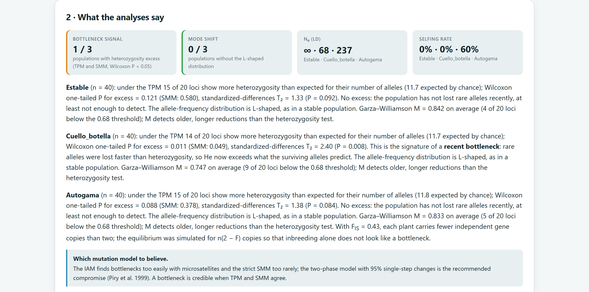
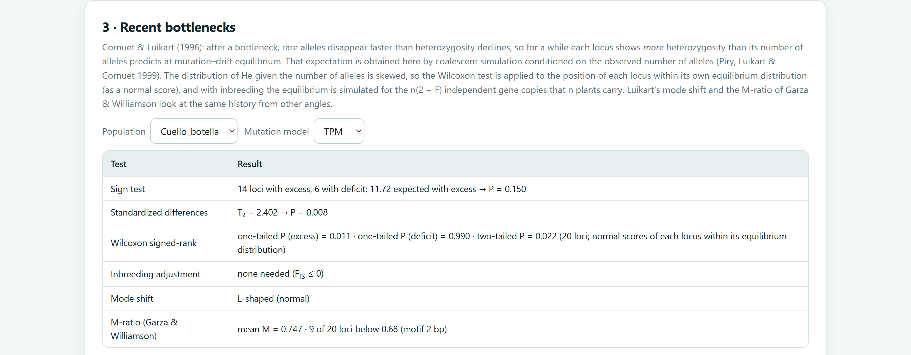
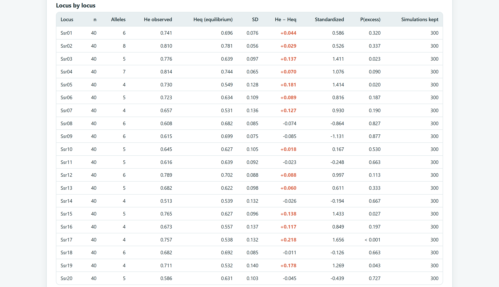
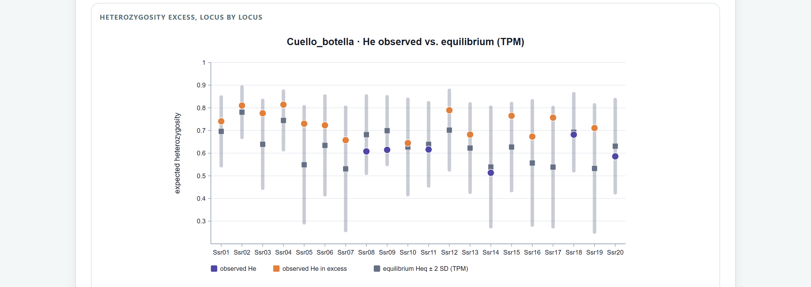
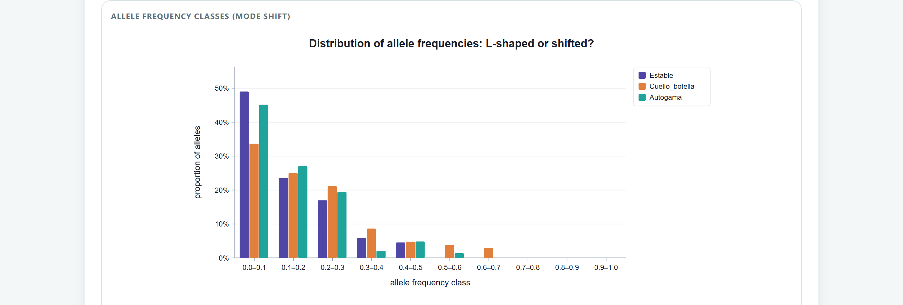
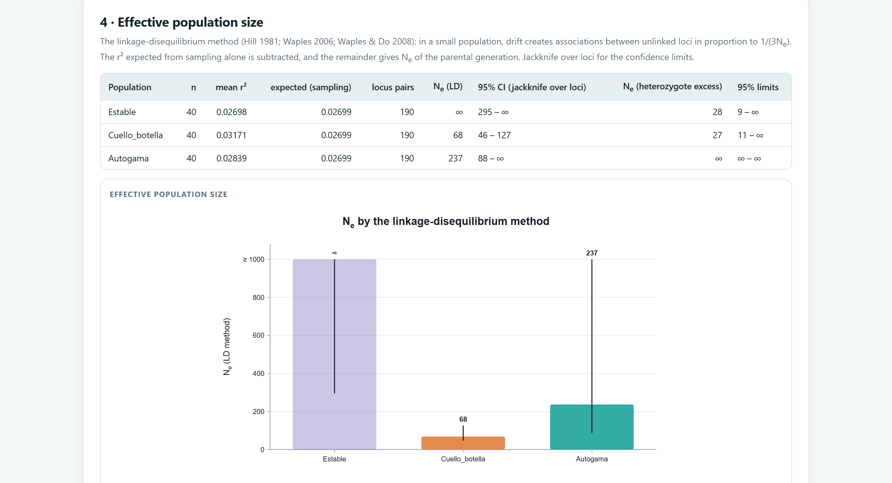
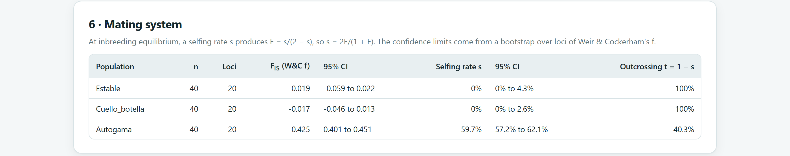
ssr-espacial.csv en el Bloque 2 (200 plantas con Latitude y Longitude, 12 loci) y construye el conjunto.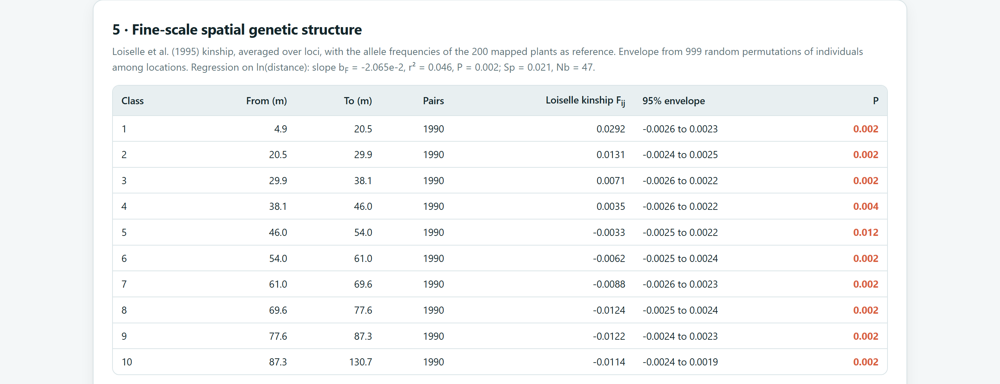
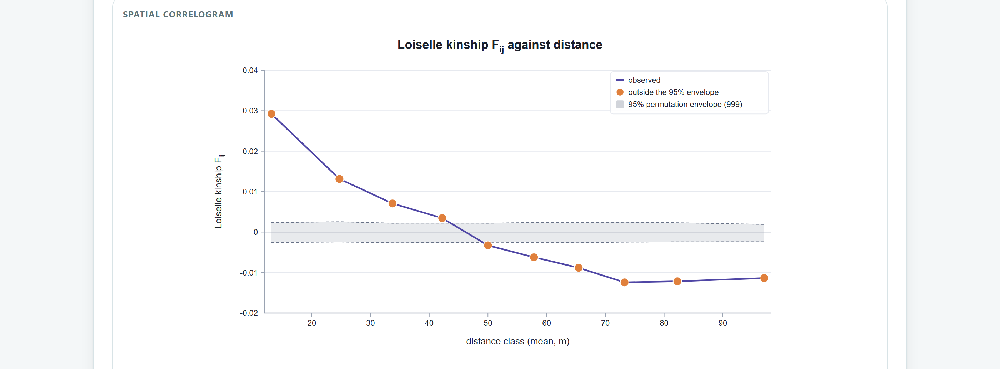
Las demás tarjetas también corren con este archivo, pero no son su objetivo, y enseñan dos precauciones. La tasa de autofecundación sale en 10.5 %, aunque en la simulación solo el 4 % de las semillas vino del polen de la propia planta: el resto del FIS de 0.056 viene de cruzas entre vecinos emparentados, como advierte la sección 10.4. Y la prueba de cuellos de botella encuentra exceso solo con TPM (P = 0.006; con SMM, P = 0.088): la simulación partió de frecuencias alélicas parejas y el rodal no está en equilibrio entre mutación y deriva, así que la app lo reporta como una señal débil.
El ejemplo Agave · AFLP trae coordenadas por planta en cuatro poblaciones separadas por 150 a 400 km. Con within populations (fine scale), la app usa solo los 760 pares de plantas de la misma población y la r de Smouse y Peakall, porque las bandas son dominantes (figura 10.15). Con all pairs, las dos primeras clases (hasta 5 km, pares de la misma población) salen con r = 0.092 y 0.083, muy por encima de la banda, y las lejanas quedan negativas: esa “estructura” es la diferenciación entre poblaciones.
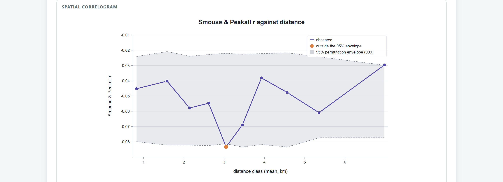
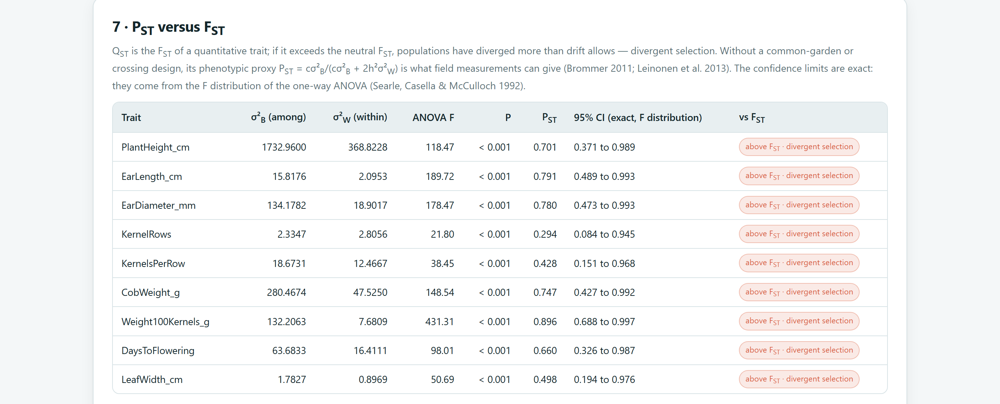
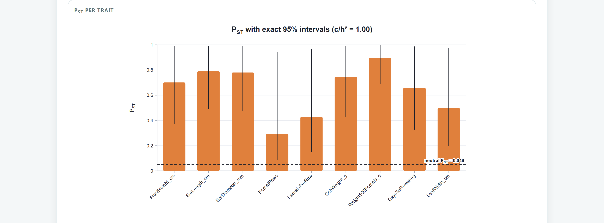
De los cuellos de botella: modelos de mutación y parámetros del TPM, simulaciones aceptadas por locus, pruebas con su P y si hubo ajuste por endogamia. De Ne: método, Pcrit, número de plantas y de loci, y el intervalo. De la estructura espacial: estimador, si los pares fueron dentro de poblaciones, clases, permutaciones, F1, bF con su P y Sp. De la autofecundación: FIS con su intervalo y la advertencia de que es una inferencia indirecta. De PST: c/h², el FST de referencia y cómo se obtuvieron los intervalos. La sección de métodos del informe del Bloque 10 redacta todo esto con la semilla.
Para este manual, la Heq simulada bajo el IAM coincidió con el valor exacto de la fórmula de Ewens en cuatro casos (40 a 80 copias), dentro de un error estándar, y las expectativas sin condicionar del IAM y del SMM coincidieron con la teoría. La prueba exacta de Wilcoxon coincidió con una enumeración independiente en 300 casos con empates. Con un generador coalescente independiente, la prueba corregida rechazó 8.5 % de 200 poblaciones estables (la de signos, 5 %), 3 % de 100 autógamas con el ajuste (15 % sin él) y detectó el 76 % de 49 poblaciones reducidas. Ne por desequilibrio de ligamiento y el D de Pudovkin se recalcularon en otro lenguaje desde los conteos de genotipos sin diferencias; en 150 simulaciones con Ne = 40, la mediana fue 42 y el intervalo cubrió el valor verdadero 95 % de las veces. El parentesco de Loiselle, F1, bF y Sp del rodal, y la r de Smouse y Peakall del agave con la fórmula de pares ordenados, se recalcularon sin diferencias. El intervalo exacto de PST cubrió el valor verdadero en 94 a 96 % de 2000 conjuntos simulados por escenario.
El siguiente capítulo cierra los análisis: el Bloque 10 reúne figuras, tablas e interpretaciones en un informe y un paquete ZIP listos para publicar.